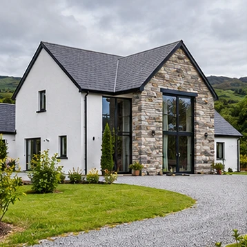

Home / Letterkenny
Doherty Electrical Services · Donegal
Your local electrician in Letterkenny
Based in Letterkenny, Ross is a qualified local electrician taking enquiries for homes, new builds and businesses in the town and surrounding areas.

Local electrical enquiries
Electrical work for your property.
Letterkenny brings together established residential neighbourhoods, new housing and busy commercial premises. Whether you are renovating a property, planning an extension or updating lighting in a workplace, share the exact location and requirements with Ross.
Call RossCommon enquiries
- New-build electrical planning
- Home renovations and rewiring
- Lighting and socket upgrades
- Commercial electrical requirements
Explore services
Find the service you need.


Our service areas
Letterkenny & Donegal.
Based in Letterkenny, serving Donegal and surrounding areas.
Letterkenny, County DonegalOpen in Google Maps
Google Maps · Letterkenny · Donegal · Town centre shown, not a business address.
Your next project
Let’s talk electrical.
Get in touch with Ross for a quote.